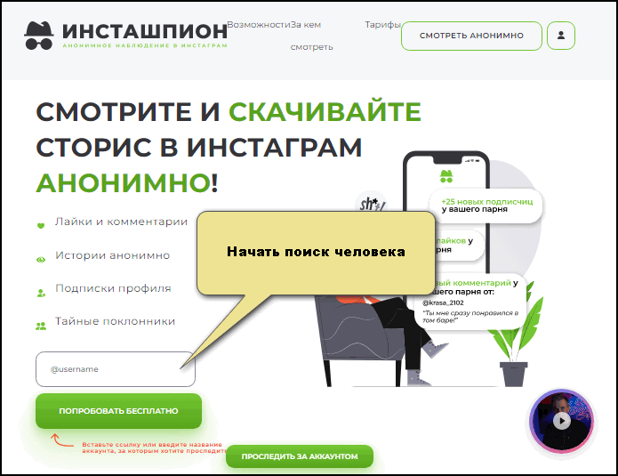
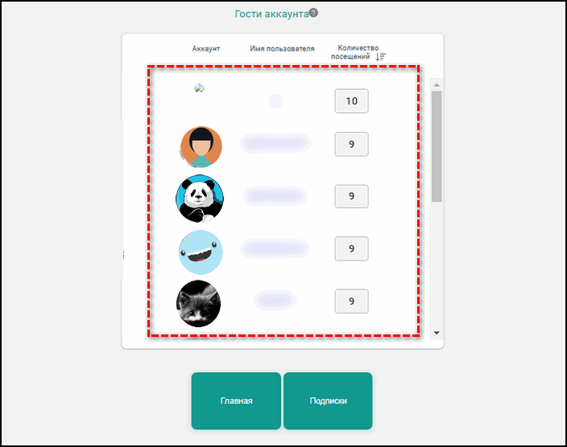
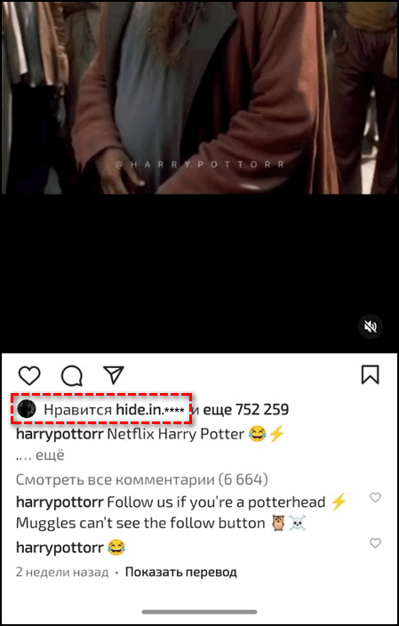
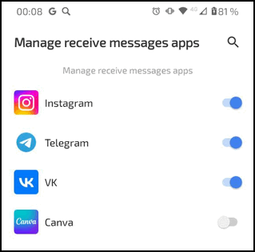
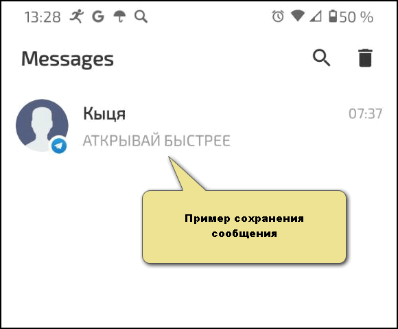

Как узнать с кем переписывается другой человек в Инстаграме

Узнать с кем переписывается в Инстаграме* другой человек не так просто. Система приватности социальной сети не разрешает даже просматривать лайки друзей.
Как узнать с кем переписывается близкий в Инстаграме*
Есть несколько способов, как определить пользователей, с кем общается близкий человек. Не рекомендуем использовать взломы, ведь это не только опасно, а и две статьи УК РФ 272 и 274 «Неправомерный доступ к компьютерной информации». Поэтому узнать такие сведения легально можно самостоятельно, не нарушая закон, ниже предлагаем 5 способов. Варианты, как узнать:
- посмотреть в списке взаимных подписок и отследить лайки с помощью Рекомендаций, автоматически отследить на кого подписывается другой человек можно по инструкции на нашем сайте;
- откроет правду сервис Instashpion, который не требует логина и пароля, чтобы следить за действиями другого человека;
- установить на его/её телефон приложение для наблюдения;
- приложения и программы для восстановления переписок. Если есть доступ к смартфону и заметно, что некоторые диалоги удалены.
Надежный способ, как узнать – посмотреть на телефоне этого человека, если есть доступ к устройству. Проблемой может стать только пароль, который зачастую устанавливают, чтобы сохранить данные или что-то скрыть, поэтому оптимальным вариантом будет использование сервиса Инсташпион.
Способ 1 - Instashpion покажет все
Узнать переписывается ли человек в Инстаграме* с другими можно через сервис Instashpion. К возможностям сайта относятся:
- просмотр актуальных Сторис и текущих коротких публикаций;
- показывает взаимные лайки, подписки;
- открывает недавно оставленные комментарии: получил или отправил другому пользователю;
- посетители страницы и постоянные гости.
С помощью взаимных подписок, регулярных лайков и комментариев можно увидеть, с кем именно общается человек. Воспользоваться Instashpion:
- Зайти в сервис – нажать по пустому полю меню.

- Ввести никнейм пользователя, которого нужно найти.
- Подождать, пока завершится проверка – перейти к разделам: «Подписки и подписчики», «Лайки» и «Гости».

- Посмотреть, кто из пользователей посещал страницу чаще остальных.
Способ 2 - Рекомендации и лайки
Рекомендации – это раздел, где владельцу страницы предложен контент, соответствующий его интересам и предпочтениям его друзей. Если кто-то из подписок поставил лайк или оставил комментарий под какой-то публикацией – она будет прорекомендована подписчикам. Посмотреть с кем переписывается по лайкам:
- Зайти в Инстаграм* – перейти к рекомендациям.
- Посмотреть первые 10 постов, перейти к лайкам.

- Убедиться, что есть отметки «Мне нравится» от искомого человека.
Далее: перейти в профиль, где стоит лайк и посмотреть взаимную подписку. На этот профиль можно подписаться с другой учетной записи, чтобы проверять новые отметки «Мне нравится» и убедиться, что между знакомым и владельцем другого аккаунта есть связь. Более показательны комментарии, которые могут быть оставлены под некоторыми публикациями.
Способ 3 - Приложения для слежки в Инстаграм*
Чтобы наблюдать за чужим аккаунтом – необязательно взламывать страницу. Есть способ, который поможет ежедневно получать информацию о всех действиях. Приложения для слежки – это тот же родительский контроль, который устанавливают на смартфоны детей, чтобы ограничить их от нежелательного контента или следить за временем, которое ребенок потратил в сети. Недостаток такого способа в том, что новое приложение будет заметно на чужом смартфоне и нужно его установить. То есть, иметь доступ к чужом телефону, чтобы успеть скачать и синхронизировать со своим смартфоном. ТОП-3 приложения:
- DeepViewer. Получайте уведомления из мессенджеров, местоположения. Работает на ПК и мобильных устройствах;
- Kidslox. Есть бесплатный период, в течение которого можно протестировать приложение;
- iKeyMonitor. Также установить на компьютер и телефон.
Еще один недостаток приложений – оно должно быть запущено или находиться в сети, чтобы просматривать информацию. Как работать с такой утилитой:
- Создать личный профиль на выбранном сайте.
- Скачать компьютерную и мобильную версии.
- Установить на обе платформы – синхронизировать устройства и запустить утилиту на смартфоне.
После – проверить работу и отображение действий. Владелец телефона может заметить, что в списке установленных утилит появилась новая. При удалении просмотр данных из Инстаграма* будет недоступен.
Способ 4 - Программы для восстановления переписок
Для восстановления переписок не так много приложений, но есть одно актуальное – Unseen& View Delete. Но чтобы посмотреть удаленные сообщения, нужно изначально установить утилиту и перевести в статус активности. Приложение сохраняет текстовые уведомления в хронологическом порядке, даже если пользователь удалил их в Директе. Воспользоваться Unseen:
- Скачать и установить приложение из Play Market.

- Запустить – подождать, пока появятся настройки.
- Указать Инстаграм* как одно из мест, откуда нужно сохранять.

Каждое появившееся сообщение можно посмотреть в этом приложении. Чтобы владелец не узнал, что установлена такая программа – можно отключить от нее уведомления в настройках. Отключить оповещения из приложения:
- Зайти в «Настройки» на смартфоне.
- Выбрать приложение – Отключить все.
Утилита продолжит сохранять данные, но не будет отображаться в строке текущих задач.
Способ 5 - Точно определить с кем переписка без взлома
Простой и эффективный способ как узнать – воспользоваться мобильным телефоном человека, у которого нужно проверить переписки. Если не установлен пароль по сканеру пальца, то узнать числовую комбинацию или графический ключ – не так сложно. К тому же, в социальной сети не отображается время последнего посещения, если пользователь не совершал никаких действий.